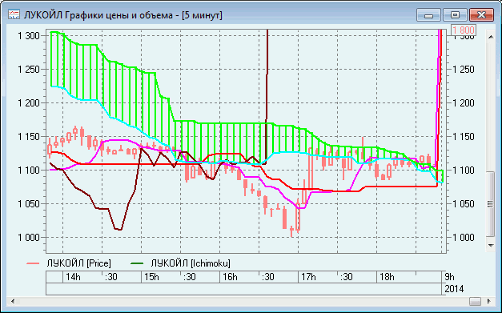

Ichimoku («Ишимоку»)
Индикатор Ишимоку Кинко Хайо (Ichimoku Kinko Hyo)
предназначен для определения рыночного тренда, уровней поддержки и сопротивления
и для генерации сигналов покупки и продажи. Лучше всего индикатор работает на
недельных и дневных графиках.
При определении размерности
параметров используется четыре временных интервала различной протяженности. На
этих интервалах основываются значения отдельных линий, составляющих этот
индикатор:
- «Tenkan-sen» (Розовая) показывает
среднее значение цены за первый промежуток времени.
Tenkan-sen
используется как
индикатор рыночного тренда. Если эта линия растет или падает — тренд существует.
Когда она идет горизонтально — рынок вошел в канал.
- «Kijun-sen» (Красная) показывает
среднее значение цены за второй промежуток времени и используется как
показатель движения рынка. Если цена выше нее, цены, вероятно, будут
продолжать расти. Когда цена пересекает эту линию вероятно дальнейшее
изменения тренда. Другим вариантом использования Kijun-sen
является подача сигналов: сигнал к покупке генерируется, когда линия
Tenkan-sen пересекает Kijun-sen снизу вверх; сверху
вниз — сигнал к продаже.
- «Senkou Span 1» (Голубая) показывает середину
расстояния между предыдущими двумя линиями, сдвинутую вперед на величину второго
временного интервала.
- «Senkou Span 2» (Зеленая) показывает
среднее значение цены за третий временной интервал, сдвинутое вперед на
величину второго временного интервала. Расстояние между линиями
Senkou штрихуется на графике
другим цветом и называется «облаком».
- «Chinkou Span» (Коричневая)
показывает цену закрытия текущей свечи, сдвинутую назад на величину второго
временного интервала. Если цена находится между линиями «облака», то рынок
считается нетрендовым и тогда края «облака» образуют уровни поддержки и
сопротивления. Если цена находится над «облаком», то верхняя его линия
образует первый уровень поддержки, а вторая — второй уровень поддержки. Если
цена находится под «облаком», то нижняя линия образует первый уровень
сопротивления, а верхняя — второй. Если линия Chinkou Span пересекает график цены снизу вверх, это является
сигналом к покупке. Если сверху вниз — сигналом к продаже.

Параметры настройки:
- «Tenkan» – длина периода для Tenkan-sen.
- «Kijun» - длина периода для Kijun-sen.
- «Senkou» - длина периода для Senkou Span 1.
- «Chinkou» – длина периода для Chinkou.
- «Горизонтальный сдвиг» - величина сдвига Senkou Span 2.
- «Цвета линий» - настройка цвета линий.
См. также Настройка вида
графика.